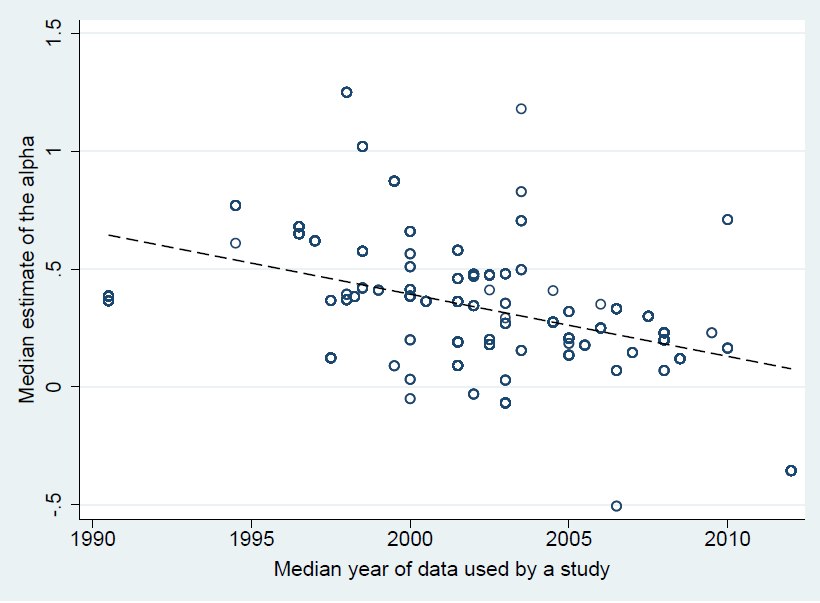

Abstract
We examine the ability of 34 variables to explain the variation in reported estimates of hedge fund performance. Using 1,019 estimates collected from 74 empirical studies, we identify 9 consistently relevant variables. We also quantify the impact of management and performance fees. Synthesizing this extensive empirical evidence, we show that when considering the fees and the variation in research designs, current performance implied by the best practice methodology is close to zero for all common hedge fund strategies. Our paper helps evaluate the robustness of prior propositions on hedge fund performance and reconcile some seemingly contradictory findings.
Fig: Reported hedge fund alphas decrease
Reference: Fan Yang, Havranek Tomas, Irsova Zuzana, and Jiri Novak (2026), "What Matters in Explaining the Variation in Hedge Fund Performance?" Charles University, Prague. Available at meta-analysis.cz/alphas.